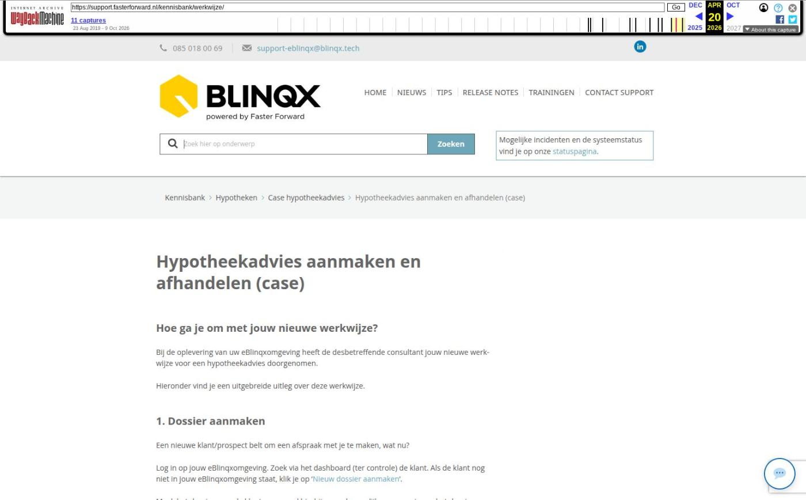

Hypotheekadvies aanmaken en afhandelen (case)
Hoe ga je om met jouw nieuwe werkwijze?
Bij de oplevering van uw eBlinqxomgeving heeft de desbetreffende consultant jouw nieuwe werkwijze voor een hypotheekadvies doorgenomen.
Hieronder vind je een uitgebreide uitleg over deze werkwijze.
1. Dossier aanmaken
Een nieuwe klant/prospect belt om een afspraak met je te maken, wat nu?
Log in op jouw eBlinqxomgeving. Zoek via het dashboard (ter controle) de klant. Als de klant nog niet in jouw eBlinqxomgeving staat, klik je op 'Nieuw dossier aanmaken'.
Maak het dossier voor de klant aan en vul hierbij zo veel mogelijk gegevens in om het dossier zo compleet mogelijk te maken. En maak de afspraak inclusief afspraakbevestiging aan. De klant is nu een 'prospect'.
2. Maak een dienst aan
Iedere prospect krijgt een dossier in eBlinqx met daarin een dienst welke aangeeft wat voor soort advies de klant wenst.
Ga naar het dossier, klik op 'Nieuw product' en selecteer hier 'Dienst'.
Vul de productkaart zo volledig mogelijk in en maak ten minste 1 rechterdeel aan.
Klik vervolgens op de pijl achter de status om de workflow door te lopen.
Selecteer in de workflow welke stukkenlijst er aangemaakt dient te worden behorend bij het profiel van de klant. Daarna klik je nogmaals op de workflow om de activatielink voor de Digimap of Uwkluis naar de klant te sturen.
3. Communicatie registreren
Na elk klantcontact (gesprek of telefoontje) zolang de klant nog prospect is, geeft je via de workflow onder de dienst aan wat de opvolging moet zijn.
Daarbij is het mogelijk om een gespreksverslag naar de klant te mailen en een opvolgingstaak voor de adviseur aan te maken.
Het is belangrijk om alle klantcontact te registreren in het dossier en de stappen in de workflow door te lopen indien dit nodig is.
4. Van prospect naar klant
Indien het definitief is dat de klant de dienst afneemt, heb je in de workflow van de dienst een mogelijkheid om een opdracht tot dienstverlening (OTD) aan te maken. De Opdracht Tot Dienstverlening wordt vervolgens als PDF bestand opgeslagen in het tabblad 'Documenten' in het klantdossier. De status van het dossier wordt door deze stap te nemen automatisch aangepast van 'prospect' naar 'klant'.
Het aanmaken van een hypotheekadvies gaat nu als volgt:
Exporteer het klantdossier van eBlinqx naar jouw adviessoftware
Maak in jouw adviessoftware het advies aan en verstuur deze naar eBlinqx.
Het bericht komt binnen in de HDN inbox. Deze is te vinden op het dashboard van jouw eBlinqxomgeving. Klik op '… inkomende bericht(en) vereisen actie' om de HDN inbox openen.
Klik op potloodicoon achter het bericht om het bericht aan te vullen en daarmee een product (de hypotheek) aan te maken in het dossier van de klant. Lees hier meer informatie.
Klik vervolgens op de naam van de hypotheek (in de kolom 'offerte') om direct naar de hypotheek in het klantdossier te gaan.
Klik op de workflow (blauwe pijl achter de status) onder de hypotheek om de aanvraag via HDN naar de maatschappij te versturen. Klik hier voor meer informatie over hoe je kunt controleren of de aanvraag verstuurd is.
Vul de datum van de ontbindende voorwaarden in om de datum te bewaken. Dit moet je doen in verband met de bewaking van die datum.
5. Afhandeling hypotheekaanvraag
Vanaf nu stuurt de workflow de volledige afhandeling van de hypotheek aan. Hierbij reageert de workflow op de HDN berichten van de maatschappij.
Je ontvangt, meestal binnen een half uur van het versturen van de aanvraag, een status bericht (SX) terug van de maatschappij. Om deze te zien, ga je naar de betreffende hypotheekofferte en klik je vervolgens op het tabblad 'HDN'. Gebruik het vergrootglas rechts in de regel van het bericht om de inhoud van het bericht te bekijken.
Na verloop van tijd stuurt de maatschappij een renteaanbod middels een offerte bericht (OX) en/of de stukkenlijst via een documenten berichten (DA). Vanaf nu kan je de stukken via de stukkenlijst in eBlinqx naar de maatschappij sturen. Zo gebruik je geen extranetten van de maatschappijen meer.
Tagged: casestarten
Afbeeldingen bij dit artikel


Schermafbeelding van de oorspronkelijke pagina

Bron: Wayback Machine-archief